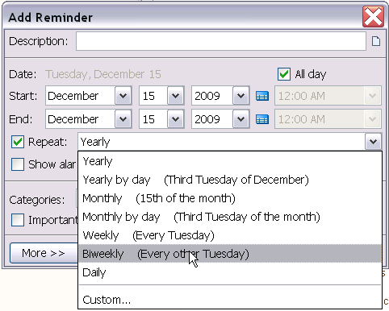
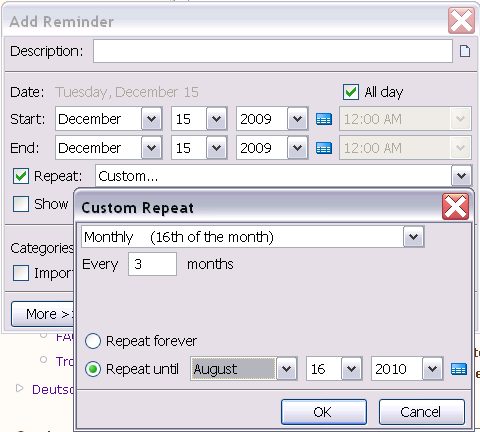
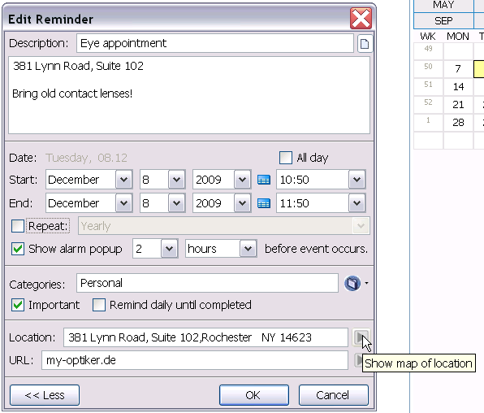

Adding Reminders
To add a new reminder to ReminderFox, use the 'Add Reminder' dialog. This dialog is brought up by first surfacing the main ReminderFox window by clicking on the ribbon in the status bar. Then, click the 'Add Reminder' button. Alternatively, you may right-click on the ribbon and select 'Add Reminder...'.
Reminder Options
Reminders have a number of different options that can be set to change their behavior.

- Description - This is the description of the reminder which shows up in your reminder list.
- Notes - If you click the Notes icon button, you can enter in additional notes for your reminder. These notes will show will also show up in the reminder tooltip when you hover over the item in the list. Tip: Add the current time to a Note by pressing F8.
- Date - Set the date you want the reminder to occur. You can enter in any starting date. Note that you can also double click any date on the calendar widget to add a reminder for that date.
- Time - You can choose to have your reminder occur All Day (such as a birthday) or at a particular time (such as an appointment). If you uncheck the
All Dayoption you can enter a specific time. You can select any time from the populated pull down list that contains the most common times. You can also type any time directly into the Time textbox for more specific times (example: 8:33 AM) - Repeat - Leave this unchecked for one-off, non-repeating reminders -- example: "Return library book". If you check this option, then you can select the frequency you want for your reminder. Learn about about the Repeat Options.
- Show alarm popup - Check this option if you want to have a reminder notification alert you at a specified time prior to the event. You can select to have an alarm popup any number of minutes, hours, or days before the reminder occurs. You can select any time from the pre-populated list of common times or directly enter any number into the textbox for more specific entries (37 minutes).
- Categories - Categories are used to associate to descriptive attributes to reminders. You can specify multiple categories per reminder separated by commas. The categories can be entered manually or selected by using the drop-down menu. Choose from the provided categories or define your own categories by selecting 'Manage Categories'. Learn more about Categories
- Important - This is for those extra-special events that you can't miss, like your wife's birthday. These reminders will show up highlighted in red in the Reminders list, as well as in the tooltip and status bar.
- Remind Daily Until Completed - This option causes the reminder to continue to remind you until it has been completed. This means that once a reminder occurs, it will continue to show up each following day until such time as you mark the reminder as
Completedor delete it. This is useful for things where you want to keep reminding yourself until you actually do it, like "remember to call Mom".
Repeat Options
The 'Add Reminder' dialog provides an extremely flexible way of specifying repeating reminders. Use the 'Repeat' drop-down to specify the frequency of the reminder.
- Yearly - this event happens on the same date every year (like a birthday)
- Yearly by day - this event happens on the same day every year such as Mother's Day (Second Sunday of May)
- Monthly - this event happens on the same date every month (like a rent payment on the 30th of each month)
- Monthly by day - this event happens on the same day every month.
- Weekly - this event happens on the same day every week
- Biweekly - Alternating - this event happens every other week
- Custom - Select 'Click here for more repeat options...' to to specify any frequency that does not fit into the above categories. This option is extremely powerful, allowing for things such as 'Repeat on the 16th of the month, every three months, until August 16th, 2010. 
More Button
Click the 'More>>' button to reveal some advanced options.

- Location - The location of an event meeting can be entered into the 'Event' textbox. The icon
 to the right of the location will open a Google Map of the specified location when clicked.
to the right of the location will open a Google Map of the specified location when clicked. - URL - A URL can be entered into the URL textbox. Clicking the icon to the right of the textbox will open this URL in Firefox.